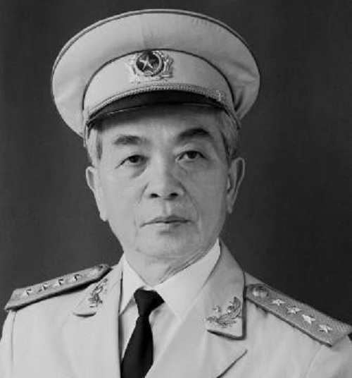
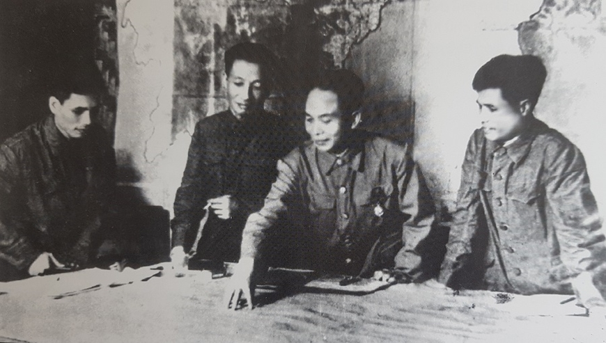

Võ Nguyên Giáp – Vị tướng huyền thoại
Ai là người đã chỉ huy Quân đội nhân dân Việt Nam đánh thắng hai đế quốc lớn của thế kỷ 20? Câu trả lời là Võ Nguyên Giáp, Đại tướng đầu tiên và Tổng Tư lệnh Quân đội nhân dân (QĐND) Việt Nam.
Suốt cuộc đời hoạt động cách mạng liên tục hơn 80 năm, ông đã có nhiều công lao to lớn đối với sự nghiệp cách mạng của Đảng và dân tộc. Đại tướng là người học trò xuất sắc và gần gũi của Chủ tịch Hồ Chí Minh, được nhân dân yêu mến, kính trọng, bạn bè quốc tế ngưỡng mộ và là niềm tự hào của các thế hệ cán bộ, chiến sĩ toàn quân.

Võ Nguyên Giáp (tên khai sinh: Võ Giáp, bí danh: Văn) sinh ngày 25-8-1911 tại làng An Xá, nay là xã Lộc Thủy, huyện Lệ Thủy, tỉnh Quảng Bình, trong một gia đình nhà nho giàu truyền thống yêu nước. Ông học giỏi, sớm được cha mẹ giáo dục về lòng yêu nước, căm thù quân xâm lược. Năm 1925-1926, ông tham gia phong trào học sinh yêu nước ở Trường Quốc học Huế và tiếp thu tư tưởng cách mạng của Nguyễn Ái Quốc. Năm 1927, Võ Nguyên Giáp gia nhập Tân Việt Cách mạng Đảng. Năm 1929, ông cùng một số đồng chí cải tổ Tân Việt thành Đông Dương Cộng sản Liên đoàn, một trong 3 tổ chức đảng hợp nhất thành Đảng Cộng sản Việt Nam. Thời gian này, Võ Nguyên Giáp được tiếp xúc với các tài liệu tuyên truyền cách mạng và Chủ nghĩa Mác, trong đó có các bài giảng của Nguyễn Ái Quốc, Bản án chế độ thực dân Pháp.
Từ 1934-1940, Võ Nguyên Giáp dạy môn lịch sử ở Trường Trung học tư thục Thăng Long, viết báo tuyên truyền xây dựng cơ sở cách mạng trong thanh niên học sinh, đồng thời tiếp tục học Đại học luật và kinh tế.
Năm 1936, ông tham gia sáng lập và viết bài bằng tiếng Việt và tiếng Pháp cho các tờ báo của Đảng: Lao động, Tiếng nói chúng ta, Tiến lên, Thời báo Cờ Giải phóng; tham gia phong trào Đông Dương Đại hội và được bầu làm chủ tịch Ủy ban báo chí Bắc Kỳ.
Năm 1941, Võ Nguyên Giáp được giao phụ trách Ủy ban Quân sự của Tổng bộ Việt Minh, tham gia chuẩn bị vũ trang khởi nghĩa, xây dựng căn cứ địa Cao - Bắc - Lạng.
Tháng 12-1944, Võ Nguyên Giáp được Hồ Chí Minh giao nhiệm vụ thành lập Đội Việt Nam tuyên truyền giải phóng quân, đội quân chủ lực đầu tiên của lực lượng vũ trang cách mạng Việt Nam do Đảng Cộng sản Đông Dương lãnh đạo. Ngày 22-12-1944, tại khu rừng Trần Hưng Đạo, nằm giữa hai tổng Hoàng Hoa Thám và Trần Hưng Đạo thuộc châu Nguyên Bình, tỉnh Cao Bằng, Võ Nguyên Giáp đọc Chỉ thị thành lập Đội Việt Nam Tuyên truyền giải phóng quân với 34 cán bộ, chiến sĩ. Võ Nguyên Giáp được ủy nhiệm lãnh đạo chung, Hoàng Sâm làm Đội trưởng và Xích Thắng (Dương Mạc Thạch) làm Chính trị viên. Ngay sau ngày thành lập, Võ Nguyên Giáp đã trực tiếp chỉ huy trận Phai Khắt - Nà Ngần (25 và 26-12-1944), mở đầu truyền thống "đánh thắng trận đầu", "đánh tiêu diệt gọn" của QĐND Việt Nam.
Võ Nguyên Giáp đã có những đóng góp quan trọng vào thắng lợi của Cách mạng tháng Tám 1945. Từ 1945-1947, Võ Nguyên Giáp đảm nhiệm nhiều vị trí quan trọng trong Chính phủ liên hiệp lâm thời, Chính phủ Liên hiệp quốc dân. Nổi bật là ngày 30-11-1946, Chủ tịch Hồ Chí Minh uỷ quyền cho Võ Nguyên Giáp làm Tổng chỉ huy Quân đội quốc gia và Dân quân tự vệ Việt Nam, sau là Tổng tư lệnh kiêm Tổng Chính ủy, Bí thư Tổng Quân ủy.
Ngày 20-1-1948, Chủ tịch Hồ Chí Minh ký sắc lệnh phong quân hàm cấp tướng cho 11 cán bộ cao cấp của quân đội, Võ Nguyên Giáp được phong quân hàm Đại tướng. Ngày 28-5-1948, ông được Chủ tịch nước Việt Nam Dân chủ Cộng hòa trao quân hàm Đại tướng. Từ tháng 7-1948, ông được tái bổ nhiệm là Bộ trưởng Bộ Quốc phòng, thay Tạ Quang Bửu. Tháng 2-1951, ông được Ban Chấp hành Trung ương bầu vào Bộ Chính trị.
Trong Kháng chiến chống Pháp của Việt Nam (1945-1954), Võ Nguyên Giáp là Tư lệnh kiêm Bí thư Đảng ủy các chiến dịch lớn: Chiến dịch Việt Bắc (7-10 đến 20-12-1947), Chiến dịch Biên Giới (16-9 đến 14-10-1950), Chiến dịch Trần Hưng Đạo (25-12-1950 đến 17-1-1951), Chiến dịch Hoàng Hoa Thám (23-3 đến 7-4-1951), Chiến dịch Quang Trung (28-5 đến 20-6-1951), Chiến dịch Hòa Bình (10-12-1951 đến 25-2-1952), Chiến dịch Tây Bắc (14-10 đến 10-12-1952), Chiến dịch Thượng Lào (13-4 đến 3-5-1953), và đỉnh cao là Chiến dịch Điện Biên Phủ (13-3 đến 7-5-1954).
Trong thời kỳ này, Võ Nguyên Giáp đã kiến nghị để đưa ra những quyết sách đúng đắn và sáng tạo như: Tổ chức lại bộ đội theo hình thức đại đội độc lập, tiểu đoàn tập trung; thành lập đại đoàn chủ lực đầu tiên; đánh Đông Khê mà không đánh Cao Bằng trong Chiến dịch Biên Giới; mở chiến dịch đánh quân chủ lực cơ động của Pháp hành quân ra Hòa Bình, đồng thời đưa một bộ phận chủ lực ta luồn vào đánh sau lưng địch để phát triển chiến tranh du kích kiềm chế, tiêu hao tiêu diệt địch; mở Chiến dịch Tây Bắc, nơi địch sơ hở và địa hình có lợi để tiêu diệt sinh lực địch, mở rộng vùng giải phóng, đặc biệt là quyết định thay đổi phương châm tác chiến từ "đánh nhanh thắng nhanh" sang "đánh chắc tiến chắc" trong chiến dịch Điện Biên Phủ. Trận quyết chiến chiến lược Điện Biên Phủ giành thắng lợi đưa đến việc ký kết hiệp nghị Geneva. Sự chỉ đạo, chỉ huy của Đại tướng Tổng Tư lệnh đã góp phần quan trọng vào thắng lợi của cuộc Kháng chiến chống Pháp.
Trong cuộc kháng chiến chống Mỹ, (1954-1975), khi quân Mỹ trực tiếp vào miền Nam, nhiều nước bạn bè khuyên Việt Nam bỏ ý định đối đầu trực tiếp với Mỹ nhưng Võ Nguyên Giáp đã khẳng định: Việt Nam sẽ thất bại nếu đánh theo kiểu chính quy của các nước lớn, nhưng người Việt Nam sẽ giành chiến thắng bằng cách đánh kiểu Việt Nam. Những kế hoạch chiến lược và phương án tác chiến của ông đã góp phần đánh bại các chiến lược của quân đội Mỹ trong cuộc chiến tranh xâm lược ở miền Nam và cuộc chiến tranh phá hoại ở miền Bắc.
Ngày 7-4-1975, Võ Nguyên Giáp ra mệnh lệnh cho toàn quân "Thần tốc, thần tốc hơn nữa, táo bạo, táo bạo hơn nữa", góp phần quan trọng vào thắng lợi của cuộc Tổng tiến công và nổi dậy Xuân 1975, đưa cuộc Kháng chiến chống Mỹ, cứu nước đến thắng lợi hoàn toàn, giải phóng miền Nam, thống nhất Tổ quốc.
Sau khi rời vị trí lãnh đạo, quản lý cho đến những năm đầu của thế kỷ 21, Đại tướng Võ Nguyên Giáp vẫn theo dõi cập nhật tình hình thời sự trong nước, thế giới và luôn quan tâm, kịp thời đóng góp ý kiến với Đảng, Nhà nước về những vấn đề quan trọng của quốc gia.
Người Anh cả của QĐND Việt Nam, Tổng Tư lệnh "văn võ song toàn", "đức tài trọn vẹn", Đại tướng của nhân dân Võ Nguyên Giáp đã từ trần hồi 18 giờ 09 phút, ngày 4-10-2013 (tức ngày 30-8 năm Quý Tỵ), tang lễ tổ chức theo nghi thức Quốc tang và được an táng ngày 13-10 tại Vũng Chùa, đảo Yến, xã Quảng Đông, huyện Quảng Trạch, tỉnh Quảng Bình.
Chiến thắng Điện Biên Phủ khẳng định thiên tài quân sự của Đại tướng Võ Nguyên Giáp
Nhắc đến Chiến thắng Điện Biên Phủ, chúng ta không thể không nói đến Đại tướng Võ Nguyên Giáp, nhà quân sự kiệt xuất với tư duy chiến lược vượt trội. Chiến thắng Điện Biên Phủ là sự khẳng định thiên tài quân sự của Đại tướng Võ Nguyên Giáp.
Năm 1953, các đòn tiến công chiến lược của quân ta trên các địa bàn trọng điểm buộc thực dân Pháp phải phân tán lực lượng để đối phó và làm phá sản bước đầu mưu đồ tập trung lực lượng của kế hoạch Navarre. Để cứu vãn tình thế trên chiến trường, Pháp được sự trợ giúp của Mỹ đã tăng viện lớn về binh lực và chi phí chiến tranh, mưu toan trong vòng 18 tháng sẽ tiêu diệt phần lớn bộ đội chủ lực của ta, kiểm soát lãnh thổ Việt Nam và Đông Dương.
Ngày 20-11-1953, Pháp mở cuộc hành quân đánh chiếm Điện Biên Phủ, từng bước xây dựng nơi đây thành tập đoàn cứ điểm mạnh. Chúng cho rằng đây là "pháo đài khổng lồ không thể công phá", tướng Giáp sẽ "không dám chấp nhận giao chiến", vì Quân đội Việt Minh chưa bao giờ tiến công một tập đoàn cứ điểm lớn đến như vậy, nếu tiến công vào Điện Biên Phủ sẽ đi vào con đường tự sát.

Vấn đề đặt ra với Bộ chỉ huy Chiến dịch nói chung, Đại tướng Võ Nguyên Giáp nói riêng không phải là không dám đánh vào nơi kẻ địch mạnh, mà là đánh như thế nào để tiêu diệt một tập đoàn cứ điểm mạnh như vậy? Bởi không đánh bại được hình thức phòng ngự tập đoàn cứ điểm của địch thì không thể mở ra cục diện thuận lợi cho cuộc kháng chiến phát triển.
Lựa chọn Điện Biên Phủ là chiến trường quyết chiến chiến lược thực chất là ta đã chọn hướng tiến công chiến lược chủ yếu vào nơi địch mạnh, thể hiện sự phát triển mới về nghệ thuật tác chiến chiến dịch của ta giai đoạn 1953-1954, là sự chuyển biến từ phương hướng "tránh chỗ mạnh, đánh chỗ yếu" sang đánh thẳng vào chỗ mạnh nhưng có nhiều sơ hở của địch, từ tác chiến vận động và công kiên nhỏ là chủ yếu sang đánh công kiên quy mô lớn mang tính chất trận địa.
Ngày 6-12-1953, Bộ Chính trị họp, hạ quyết tâm: "Tiêu diệt tập đoàn cứ điểm Điện Biên Phủ để tạo nên một bước ngoặt mới trong chiến tranh". Ngày 1-1-1954, Đại tướng Võ Nguyên Giáp, Ủy viên Bộ Chính trị, Tổng Tư lệnh được giao nhiệm vụ làm Chỉ huy trưởng Chiến dịch kiêm Bí thư Đảng ủy Mặt trận Điện Biên Phủ.
Với những kiến thức được hội tụ trong quá trình tự học tập, nghiên cứu, rèn luyện, sự đúc rút kinh nghiệm đánh giặc giữ nước của dân tộc Việt Nam, lịch sử quân sự trên thế giới và tài năng quân sự xuất chúng, Đại tướng Võ Nguyên Giáp hiểu rõ vinh dự, trọng trách lớn lao mà Bộ Chính trị và Chủ tịch Hồ Chí Minh đã tin tưởng giao nhiệm vụ qua lời dặn dò trước lúc lên đường: "Tổng Tư lệnh ra mặt trận. Tướng quân tại ngoại. Trao cho chú toàn quyền quyết định".
Ngày 12-1-1954, tại Tuần Giáo, Đại tướng nghe đồng chí Hoàng Văn Thái, Tham mưu trưởng Chiến dịch báo cáo. Đảng ủy Mặt trận và tất cả đều tán thành phương châm Chiến dịch là "đánh nhanh, giải quyết nhanh". Cố vấn Trung Quốc Vi Quốc Thanh cũng khẳng định: Nếu không tranh thủ đánh sớm khi địch còn đứng chân chưa vững, để nay mai chúng tăng quân và củng cố công sự thì không đánh được, ta sẽ bỏ mất thời cơ. Rõ ràng, mặc dù là Chỉ huy trưởng kiêm Bí thư Đảng ủy Mặt trận, nhưng số đông lại có ý kiến khác là điều Đại tướng phải cân nhắc. Ông nhớ lời Bác dặn trước lúc ra mặt trận "Trận này rất quan trọng, phải đánh cho thắng! Chắc thắng mới đánh, không chắc thắng không đánh".
Theo phương châm "đánh nhanh, giải quyết nhanh", thời gian Chiến dịch dự kiến 3 đêm 2 ngày, nổ súng vào ngày 20-1-1954. Nhưng trước sự tăng cường phòng ngự của địch và qua nhiều ngày theo dõi, Đại tướng nhận thấy địch không còn ở trong trạng thái lâm thời phòng ngự, mà đã trở thành một tập đoàn cứ điểm phòng ngự kiên cố, pháo binh của ta là hỏa lực chủ yếu của Chiến dịch lại không kéo được vào trận địa đúng thời gian, yêu cầu, nếu "đánh nhanh, giải quyết nhanh" thì không bảo đảm thắng lợi.
Mặt khác, công tác chuẩn bị cho Chiến dịch của ta còn nhiều khó khăn, như: Bộ đội ta chưa có kinh nghiệm đánh tập đoàn cứ điểm; đây là trận đầu tiên ta đánh hiệp đồng binh chủng giữa bộ binh, pháo binh với quy mô lớn mà bộ đội ta lại chưa qua diễn tập; bộ đội ta từ trước tới nay mới chỉ quen tác chiến ban đêm, ở những địa hình dễ ẩn náu và chưa có kinh nghiệm công kiên ban ngày trên địa hình rộng, bằng phẳng, trống trải; nay phải chiến đấu liên tục trong 2 ngày 3 đêm với quân Pháp có ưu thế về hỏa lực sẽ không tránh khỏi thương vong, khó hoàn thành nhiệm vụ.
Bằng nhãn quan của một nhà quân sự thiên tài trong đánh giá, dự báo chiến lược về âm mưu, phương thức, thủ đoạn tác chiến của quân Pháp qua kế hoạch Navarre và thực tiễn trên chiến trường Đông Dương, nhất là địch tại chiến trường Điện Biên Phủ, Đại tướng không đánh giá thấp sức mạnh của Pháp tại tập đoàn cứ điểm này, luôn thấu hiểu sâu sắc rằng chỉ có đánh bại được hình thức phòng ngự bằng tập đoàn cứ điểm Điện Biên Phủ của địch mới quyết định thắng lợi cuộc kháng chiến chống thực dân Pháp.
Sau nhiều ngày suy nghĩ, Đại tướng Võ Nguyên Giáp cho rằng: Để bảo đảm toàn thắng cho Chiến dịch, phải tạm ngừng nổ súng, kéo pháo ra, chuẩn bị thêm để đánh theo phương châm tác chiến mới là "đánh chắc, tiến chắc". Tuy nhiên, thay đổi phương châm tác chiến sẽ đặt ra rất nhiều khó khăn mới, vì bộ đội ta được chuẩn bị để đánh nhanh, bộ binh đã triển khai đội hình, phần lớn pháo binh đã vào trận địa nay lại rút ra làm cho tư tưởng bộ đội dễ hoang mang.
Hơn thế, mọi công tác chuẩn bị đều phải làm lại từ đầu, những khó khăn về cung cấp, vận tải tiếp tế khi mùa mưa đến... sẽ tăng lên. Nhưng không thể vì những khó khăn, trở ngại do Chiến dịch kéo dài mà chọn cách đánh không bảo đảm chắc thắng.
Theo đề nghị của Đại tướng Võ Nguyên Giáp, trải qua nhiều giờ thảo luận với tinh thần đoàn kết và ý thức trách nhiệm cao, Đảng ủy Mặt trận nhất trí thay đổi phương châm tác chiến là một quyết tâm rất lớn, thể hiện cụ thể sự quán triệt tư tưởng chỉ đạo đánh chắc thắng của Trung ương.
Đại tướng kết luận: Đánh theo phương châm "đánh nhanh, thắng nhanh" nhất định thất bại và quyết định chuyển sang phương châm "đánh chắc, tiến chắc". Đây là quyết định sáng suốt mang đậm nhãn quan quân sự cá nhân sắc sảo, bản lĩnh, dũng cảm, quyết đoán, táo bạo, sáng suốt, thể hiện trách nhiệm rất cao trước thắng lợi của Chiến dịch và xương máu cán bộ, chiến sĩ của người cầm quân; yếu tố quyết định bảo đảm thắng lợi của Chiến dịch Điện Biên Phủ.
Với phương châm "đánh chắc, tiến chắc", ta đã điều chỉnh lực lượng và thế trận, cô lập địch ở tập đoàn cứ điểm Điện Biên Phủ, cắt chi viện bằng đường không, vây hãm toàn bộ tập đoàn cứ điểm Điện Biên Phủ và từng trung tâm đề kháng của Pháp, tiêu diệt từng bộ phận tiến tới đánh bại toàn bộ địch. Phương châm này thể hiện sự nổi bật về nghệ thuật chiến tranh nhân dân, nghệ thuật sử dụng lực lượng, nghệ thuật tránh chỗ mạnh, đánh chỗ yếu; đánh chắc, tiến chắc, không chắc thắng không đánh.
Dưới sự lãnh đạo sáng suốt của Đảng ta và Chủ tịch Hồ Chí Minh, Đại tướng Võ Nguyên Giáp trở thành vị tướng huyền thoại, thiên tài quân sự có nhiều cống hiến xuất sắc góp phần làm nên những chiến công vĩ đại không chỉ trong kháng chiến chống thực dân Pháp, mà còn cả trong cuộc kháng chiến chống Mỹ, cứu nước, như: Tổng tiến công và nổi dậy Xuân Mậu Thân (năm 1968), Hà Nội-Điện Biên Phủ trên không (năm 1972), Đại thắng mùa Xuân 1975 thống nhất đất nước, viết nên những trang sử vẻ vang của dân tộc Việt Nam.
Đại tướng Võ Nguyên Giáp là chuyên gia lỗi lạc hàng đầu về đường lối chiến tranh nhân dân của phong trào giải phóng dân tộc trong nước và trên thế giới, nhà chỉ huy quân sự có tài thao lược kiệt xuất, bậc thầy về nghệ thuật chiến tranh nhân dân, nghệ thuật quân sự.
Thiên tài quân sự của Đại tướng Võ Nguyên Giáp là tấm gương và di sản vô cùng quý giá để các thế hệ cán bộ, chiến sĩ Quân đội ta noi theo, vận dụng hiệu quả, đáp ứng yêu cầu nhiệm vụ bảo vệ Tổ quốc trong tình hình mới.
Ủy viên Trung ương Đảng, Giám đốc Học viện Quốc phòng